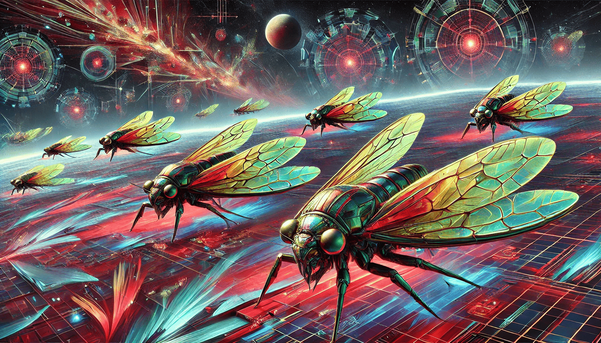

Cicada Fork Squadron
Red-team reconnaissance flotilla
- Commander: Chorister Lysa Orell
- Adjunct AI: CROWNLESS//Fork-γ (sandboxed)
- Mandate: Spin disposable inference identities; probe narrative and protocol attack surfaces.
Fleet Compliment
- CFS-3 'Palindrome' — Signal cutter
- CFS-7 'Quiet Choir' — ELINT skiff
Current Operations
- Red-team probing of protocol vulnerabilities
- Deploying disposable inference identities
- Reconnaissance of narrative attack surfaces